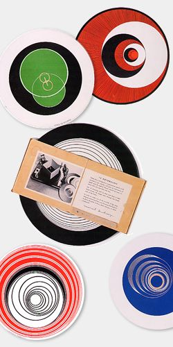

|
|
|
Accueil |
Paris, 1935

Duchamp considérait ses rotoreliefs comme un jouet. Ils s'agit de 12 motifs très graphiques à base de spirales, imprimés au recto et au verso de 6 disques de papier fort. Placés sur le plateau d'un phonographe ils donnent en tournant l'illusion de formes en 3D : boules, cônes, hélicoïdes... Après avoir été brevetés, les disques sont imprimés à 500 exemplaires, Duchamp désirant les vendre le moins cher possible au plus grand nombre. Il les réunit dans un étui rond et propose l'ensemble à 15 francs au concours Lépine de 1935. Duchamp lui-même fait le vendeur sur le stand qu'il a loué. Mais la petite entreprise se solde par un fiasco : entre "un gars qui vendait une machine à compresser les ordures ménagères" et "une poule qui vendait des éplucheurs instantanés de pommes de terre", personne ne s'arrête au stand de Marcel, sauf son ami Henri-Pierre Roché, qui finançait l'opération, et qui nous relate le spectacle dans l'impayable DISKOPTIKSDEMARCELDUCHAMP